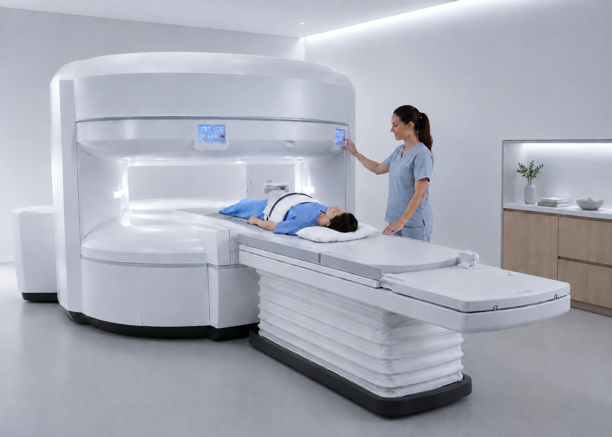

Modernste offene MRT-Diagnostik mit dem 1.2T OASIS Velocity. Höchste Bildqualität ohne Tunnelgefühl — schonend, präzise und für alle Patienten geeignet.
State-of-the-art open MRI diagnostics with the 1.2T OASIS Velocity. Highest image quality without tunnel feeling — gentle, precise, suitable for all patients.
Das Fujifilm OASIS Velocity ist ein offenes MRT-System im U-förmigen Design. Dank der vollständig offenen Bauweise gibt es keine beengende Röhre — der Patient liegt frei, in einem offenen, luftigen Untersuchungsraum.
The Fujifilm OASIS Velocity is an open MRI system with a U-shaped design. Thanks to its completely open construction, there is no confined tube — the patient lies freely in an open, airy examination space.
Die U-Form des Geräts lässt alle Seiten offen. Ideal für Patienten mit Klaustrophobie, Übergewicht oder Angstgefühlen.
The U-shape leaves all sides open. Ideal for patients with claustrophobia, obesity, or anxiety.
Permanentmagnet-Systeme arbeiten deutlich leiser als supraleitende Geräte — ein entspanntes Untersuchungserlebnis.
Permanent magnet systems operate significantly quieter than superconducting devices — a relaxed examination experience.
Kinder, Senioren, grossgewachsene Personen und Patienten bis 180 kg — das offene Design schafft Raum für jeden.
Children, seniors, tall individuals and patients up to 180 kg — the open design creates space for everyone.
Das MRT ist vielseitig einsetzbar — von der Wirbelsäule bis zum Gehirn, von den Gelenken bis zu den inneren Organen.
MRI is versatile — from the spine to the brain, from joints to internal organs.
Bandscheibenvorfälle, HWS/BWS/LWS, Stenosen, Nervenkompression, Spondylarthrose
Disc herniation, cervical/thoracic/lumbar spine, stenosis, nerve compression, spondylarthrosis
Knie, Schulter, Hüfte, Sprunggelenk, Handgelenk — Knorpel, Bänder, Menisken, Sehnen
Knee, shoulder, hip, ankle, wrist — cartilage, ligaments, menisci, tendons
Tumore, Schlaganfall, Multiple Sklerose, Demenz, Kopfschmerzen, Sinusitis, Orbita
Tumours, stroke, multiple sclerosis, dementia, headaches, sinusitis, orbit
Leber, Nieren, Bauchspeicheldrüse, Prostata, Uterus, Blase, gynäkologische Diagnostik
Liver, kidneys, pancreas, prostate, uterus, bladder, gynaecological diagnostics
Darstellung der Blutgefässe ohne Strahlung — Aorta, Nierenarterien, Becken- und Beingefässe
Visualisation of blood vessels without radiation — aorta, renal arteries, pelvic and leg vessels
Muskel-, Sehnen- und Bänderverletzungen, Weichteiltumoren, Lymphknoten, Entzündungen
Muscle, tendon and ligament injuries, soft tissue tumours, lymph nodes, inflammation
Die meisten MRT-Untersuchungen dauern zwischen 20 und 45 Minuten, abhängig von der untersuchten Körperregion und dem klinischen Fragestellung. Gelenkuntersuchungen sind oft kürzer, komplexere Abdomen- oder Schädelaufnahmen können etwas länger dauern. Wir informieren Sie vorab über die geplante Dauer.
Most MRI examinations take between 20 and 45 minutes, depending on the body region examined and the clinical question. Joint examinations are often shorter; more complex abdominal or cranial scans may take somewhat longer. We will inform you in advance of the planned duration.
Ja, die MRT arbeitet mit Magnetfeldern und Radiowellen — vollständig ohne ionisierende Strahlung. Die Methode gilt als sehr sicher und kann, wenn nötig, mehrfach wiederholt werden. Bei Schwangerschaft, implantierten Metallteilen (z.B. Herzschrittmacher) oder Metallfremdkörpern informieren Sie uns bitte vorab.
Yes, MRI works with magnetic fields and radio waves — completely without ionising radiation. The method is considered very safe and can be repeated if necessary. Please inform us in advance if you are pregnant, have implanted metal parts (e.g. pacemaker), or metal foreign bodies.
Für die Kostenübernahme durch die Grundversicherung (KVG) ist grundsätzlich eine ärztliche Zuweisung erforderlich. Eine Selbstzahler-Untersuchung ist auch ohne Zuweisung möglich. Wir beraten Sie gerne telefonisch oder per E-Mail über die genauen Voraussetzungen und Kosten.
For coverage by basic health insurance (KVG), a doctor's referral is generally required. A self-pay examination is also possible without a referral. We are happy to advise you by phone or email about the exact requirements and costs.
Bringen Sie bitte Ihre Krankenkassenkarte, die ärztliche Zuweisung, bereits vorhandene Voruntersuchungen (Röntgen, CT, frühere MRT-Bilder) sowie eine Liste Ihrer Medikamente und Implantate mit. Tragen Sie bitte keine Metallschmuckstücke oder Uhren. Bequeme Kleidung ohne Metallteile ist empfehlenswert.
Please bring your health insurance card, doctor's referral, any previous examinations (X-ray, CT, earlier MRI images), and a list of your medications and implants. Please do not wear metal jewellery or watches. Comfortable clothing without metal parts is recommended.
Vereinbaren Sie jetzt Ihren Termin — schnell, unkompliziert und in entspannter Atmosphäre.
Book your appointment now — quickly, easily, and in a relaxed atmosphere.